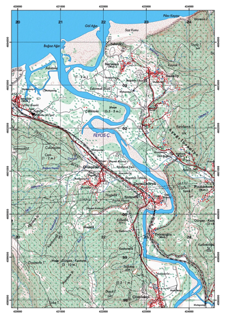
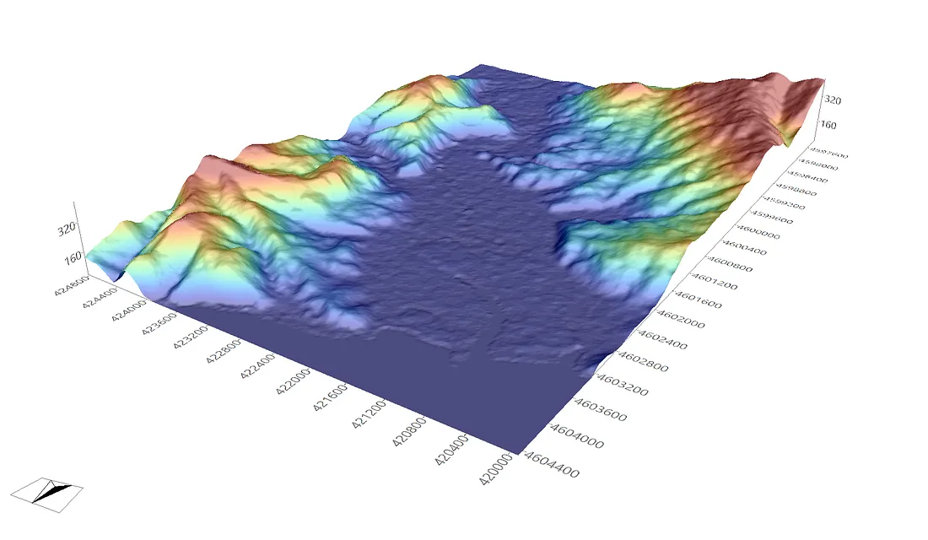
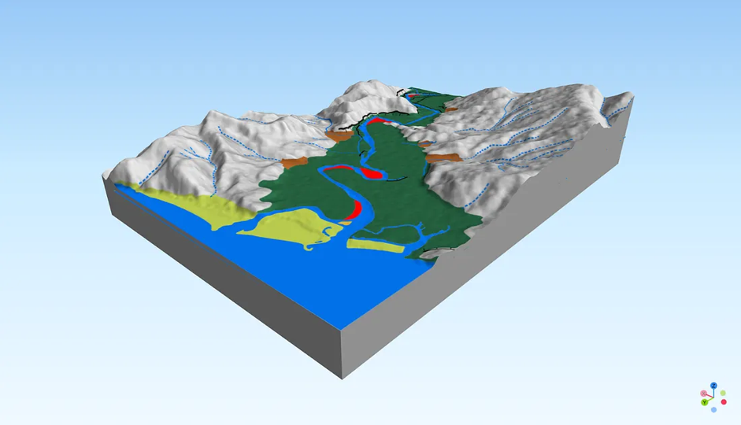
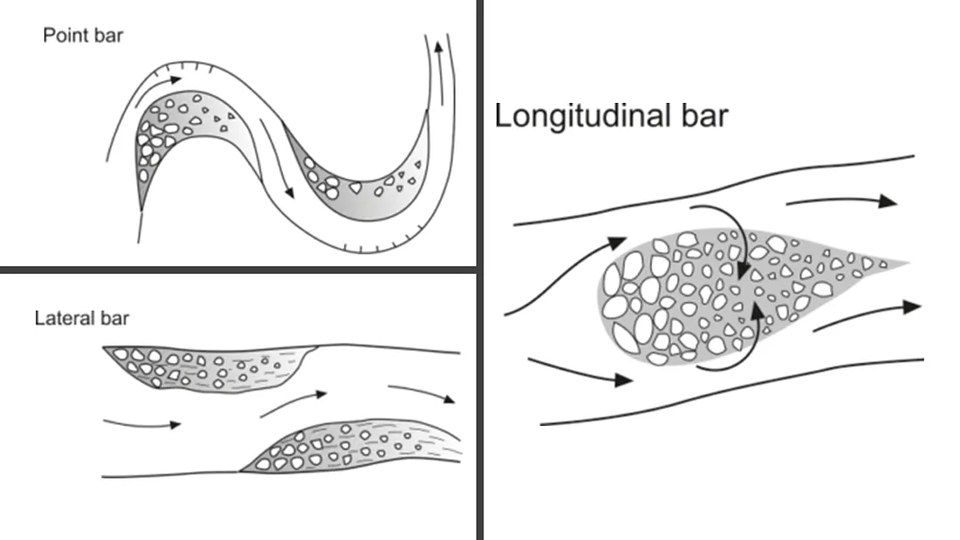
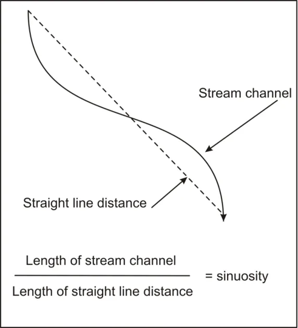
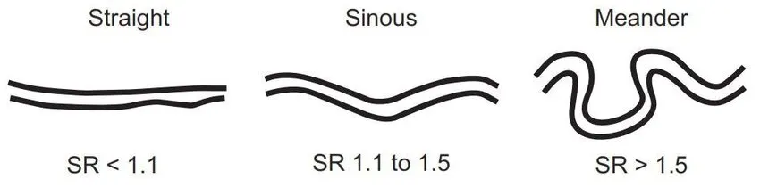
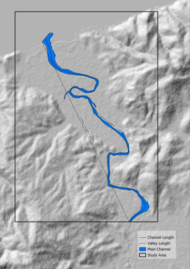
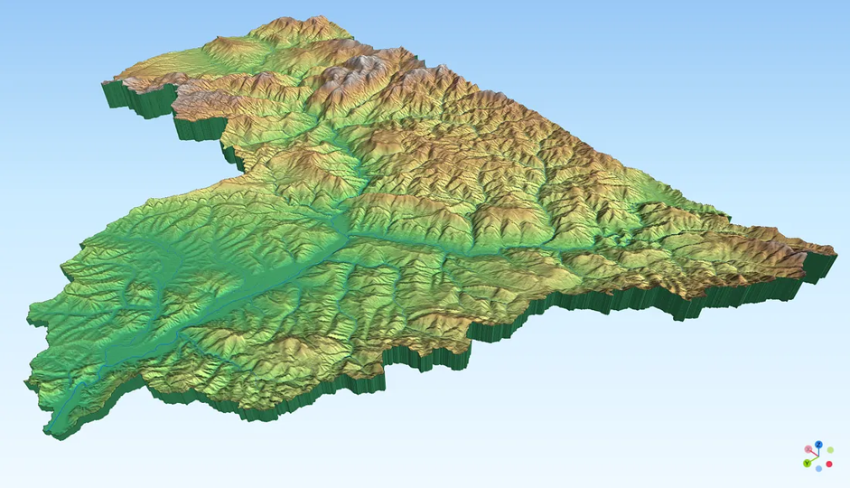
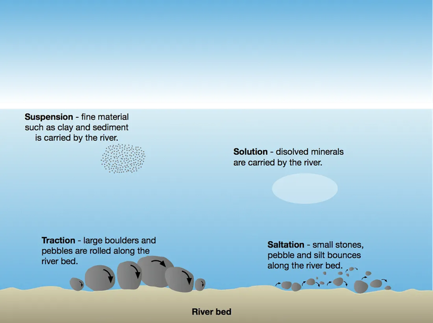

Mapping Fluvial Features of the Filyos River
A Geomorphological Analysis of Fluvial Landforms and Channel Sinuosity

Abstract
The Filyos River, draining the North Anatolian mountain range southward and discharging into the Black Sea, exhibits a well-developed suite of fluvial landforms within its lower reach, including a meandering channel, an actively accreting floodplain, and discrete depositional bars. This study applies topographic-map and Digital Elevation Model (DEM) interpretation, supported by GIS-based geometric measurement, to identify and characterise these landforms across the downstream portion of the Filyos River basin. Channel sinuosity is quantified through the ratio of channel length to valley length, yielding a sinuosity index of 1.57, confirming a genuinely meandering planform rather than a merely irregular one. The meandering pattern is further interpreted in relation to upstream basin conditions, sediment-load character, and the degree of lateral confinement imposed on the floodplain by the surrounding valley geology.
1. Introduction
The topographic map presented in Figure 1 depicts the Filyos River in northern Türkiye as it flows from the North Anatolian mountains, in the south, to its outlet at the Black Sea, in the north. The map renders several fluvial features with clarity, including the meandering channel, the surrounding floodplain, and sediment deposits distributed intermittently along the riverbank. A Geographic Information System (GIS) provides an effective analytical framework through which these features may be identified, measured, and interpreted, allowing the underlying formative processes and their interactions to be examined in greater depth than visual inspection alone permits.
2. GIS as an Analytical Instrument
A Geographic Information System (GIS) is a computational framework for the analysis and manipulation of spatial data according to a defined analytical objective. Such systems are indispensable to geographers and geoscientists more broadly, providing the tools required to characterise physical phenomena at the Earth's surface and, where appropriate, to model them directly — sediment-flow modelling, hydrological modelling, and geological modelling among them. Software such as SAGA GIS offers an extensive suite of modules for terrain analysis and process modelling; its effective use requires principally a working knowledge of geoscience and appropriately structured raster or vector data. Proprietary platforms such as ArcGIS Pro and open-source alternatives such as QGIS differ chiefly in interface design rather than in underlying analytical capability, and both are suitable for the present study.
3. Data and Software
The identification and mapping of fluvial features from a topographic map requires, at minimum, a scanned reproduction of the source map, preferably in an uncompressed raster format such as .jpg or .png, suitable for direct import into a GIS environment. In this study, QGIS was employed for geomorphological and hydrological analysis, and SAGA GIS for terrain visualisation and modelling. QGIS was selected for its open-source availability, analytical capability, and broad community support, while SAGA GIS was selected for its particular suitability to geoscientific applications, having been developed within the Department of Physical Geography at the University of Göttingen.
The topographic map was georeferenced to the UTM Zone 36N coordinate system, referenced to the WGS 1984 datum. Georeferencing accuracy was high, owing to the clear legibility of coordinate tick marks on the source map, and the resulting registration aligns closely with the underlying DEM.
The topographic map is rendered with a multiply blend mode over the DEM, allowing its correspondence with the underlying elevation surface to be assessed directly. This composite visualisation permits the identification of several fluvial features without requiring further quantitative analysis, including the floodplain, valley slope, sandbars, point bars, lateral bars, sediment deposits, and the meandering channel itself.

4. Identification of Fluvial Landforms
More detailed analysis of the topographic map, supported by the DEM, allows a fuller inventory of the fluvial features present within the study area — the downstream reach of the Filyos River.

Nine landforms are identified within the study area (Figure 4), the majority of which are unambiguously fluvial in origin, including bars, alluvial fans, and the floodplain itself. These features result from the coupled action of erosion and deposition along the river's course. Bars and alluvial fans are, specifically, depositional landforms: as channel gradient decreases toward the downstream reach, the flow's capacity to transport boulders, gravel, and finer sediment diminishes correspondingly, favouring deposition over continued transport. Erosion, by contrast, predominates in the upstream reach, where steeper topography sustains higher flow velocity and discharge, enabling more effective incision of valley slopes. Material eroded upstream is subsequently transported downstream and deposited once the flow's competence declines under the flatter downstream gradient, forming deposits along the channel margin (side bar), within the interior of meander bends (point bar), and along the channel centreline, elongated in the direction of flow (longitudinal bar).
4.1 Depositional Landforms: Bars and Alluvial Fans
Alluvial fans within the study area are formed principally by ephemeral streams — channels that convey water only during, or immediately following, precipitation events — moving sediment along the valley slope. Given the prevailing topographic conditions, it is probable that these alluvial fans reflect the limited transport capacity of ephemeral flow: rather than conveying sediment as far as the main river channel, the streams deposit their load along the valley slope itself, their discharge being insufficient to sustain transport over greater distances.

5. Channel Sinuosity Analysis
Attention is now turned to the most distinctive characteristic of the channel: its meandering planform. Prior to interpreting the causes of this pattern, however, it is necessary to establish, quantitatively, whether the channel meets the formal definition of a meandering river, since visual impression alone may not correspond reliably to a rigorous geometric classification. Geometrical analysis of meander form provides the appropriate basis for this determination.

Determination of the sinuosity ratio requires measurement of both channel length and valley length. The ratio indicates the degree of channel curvature and is obtained by dividing the length of a given channel reach by the straight-line distance spanned by the valley over the same reach (Charlton, 2007):
where $L_{channel}$ is the measured length of the channel reach and $L_{valley}$ is the straight-line valley length over the equivalent reach. A channel is conventionally classified as meandering where $SI > 1.5$.

Channel length and valley length were measured directly within the GIS environment, as illustrated below.

The valley length of the study reach measures 7 km, and the channel length measures 11 km, yielding a sinuosity index of $SI = 11/7 \approx 1.57$. As this value exceeds the conventional meandering threshold of 1.5, the Filyos River, over the study reach, is confirmed to be genuinely meandering rather than merely irregular in plan. It should be noted, however, that the sinuosity ratio and its associated classification thresholds (Figure 9) do not account for underlying physical or geological variation between rivers, and the threshold values themselves, though widely applied, remain somewhat arbitrary conventions rather than physically derived constants.
6. Controls on Meander Development
Having established that the channel meets the geometric definition of a meandering river, attention turns to the underlying controls on this planform — specifically, why the Filyos River develops a meandering pattern rather than an anabranching or braided one. The explanation is found principally in the conditions prevailing in the upstream portion of the basin.

The upstream basin is characterised by mountainous, markedly hilly terrain. Under these conditions, discharge is high and the flow possesses sufficient competence to erode the valley slopes along the river's course, entraining the eroded material and transporting it downstream predominantly as suspended load. This mode of transport is characteristically associated with the formation of meandering channels, in contrast to bed-load-dominated transport, which is more typically associated with braided channel patterns. Figure 13 illustrates the principal modes of fluvial sediment transport.

6.1 Floodplain Character and Confinement
In addition to sediment-load character, geological setting exerts a significant control on meander development. The floodplain within the study area is comparatively narrow, constrained by valley-margin boundary conditions that place the Filyos River channel in a partly confined setting. Although the channel is able to develop a floodplain and migrate laterally to a limited degree, further migration is restricted by the adjacent valley or hillslope, a constraint governed by the geological and lithological resistance of the bounding material: the more resistant the rock structure, the more effectively it inhibits channel erosion and lateral migration.
Floodplain deposits along the Filyos channel range from gravel to fine sand, characterising the floodplain as a medium-energy, non-cohesive depositional environment. Specific stream power within this environment ranges from 10 to 300 W·m⁻², and floodplain construction proceeds principally through point-bar and lateral-bar accretion (see Figure 6).
7. Conclusion
The downstream reach of the Filyos River exhibits a well-developed suite of fluvial landforms, comprising a meandering channel, an actively accreting floodplain, and depositional bars and alluvial fans, all identifiable through combined topographic-map and DEM interpretation. Quantitative analysis of channel geometry confirms a sinuosity index of 1.57, substantiating the channel's classification as genuinely meandering rather than merely irregular. This planform is most plausibly attributable to the suspended-load-dominated sediment regime generated by the steep, high-discharge conditions of the upstream basin, while the comparatively narrow floodplain reflects a degree of lateral confinement imposed by the resistant valley-margin geology. Together, these observations illustrate how topographic-map interpretation, supported by GIS-based geometric measurement, can substantiate qualitative geomorphological observation with a reproducible quantitative basis.
References
[1] Akbar, I., & Setiawan, B. (2019). Morphometric analysis for evaluation of environmental change and disaster reduction of flood.
[2] Charlton, R. (2007). Fundamentals of fluvial geomorphology. Routledge.
[3] Giles, P. T., Whitehouse, B. M., & Karymbalis, E. (2018). Interactions between alluvial fans and axial rivers in Yukon, Canada and Alaska, USA. Geological Society, London, Special Publications, 440(1), 23–43.
Software & Plugin[1] Conrad, O., Bechtel, B., Bock, M., Dietrich, H., Fischer, E., Gerlitz, L., Wehberg, J., Wichmann, V., & Böhner, J. (2015). System for Automated Geoscientific Analyses (SAGA) v. 2.1.4. Geoscientific Model Development, 8, 1991–2007. https://doi.org/10.5194/gmd-8-1991-2015
[2] QGIS.org (2024). QGIS Geographic Information System. Open Source Geospatial Foundation Project. http://qgis.org
Dataset[1] ALOS PALSAR DEM
[2] Copernicus Global DSM
[3] Türkiye's General Directorate of Mapping